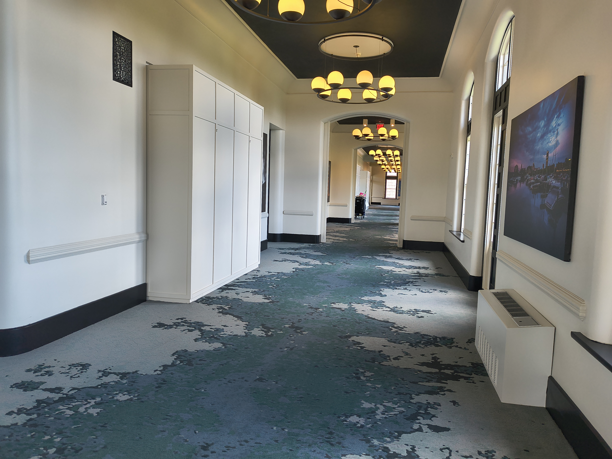
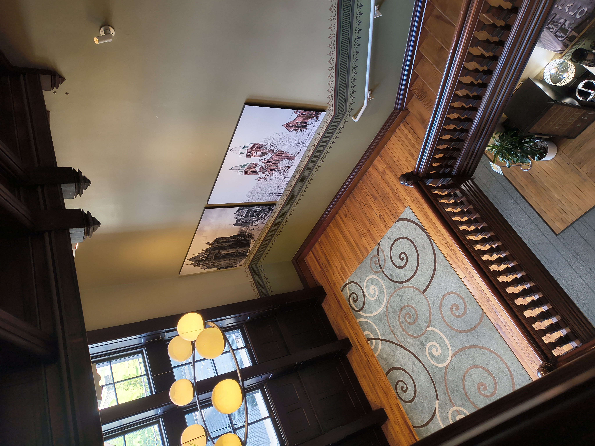
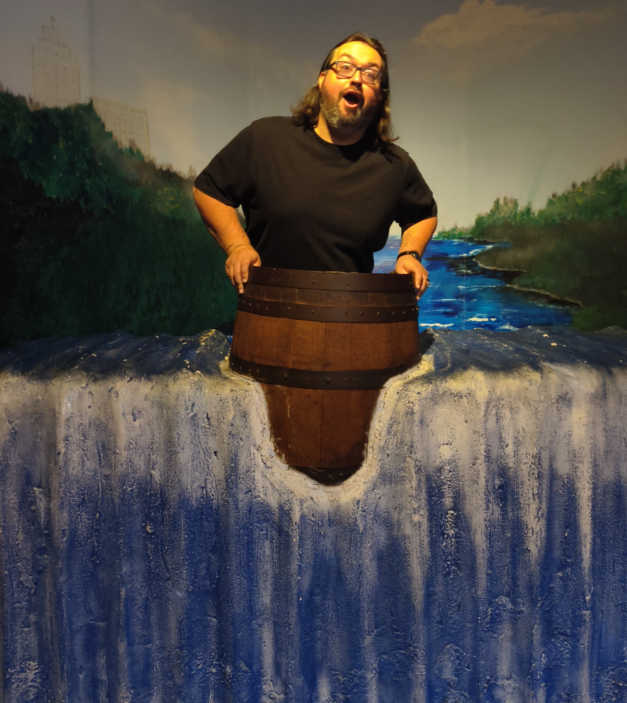
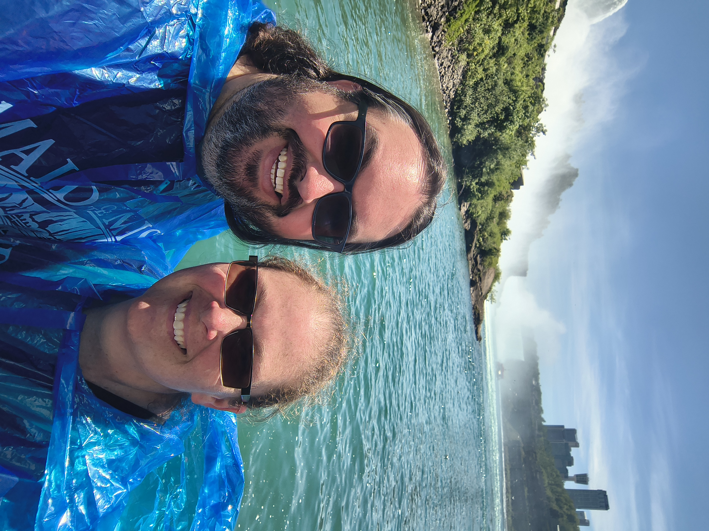
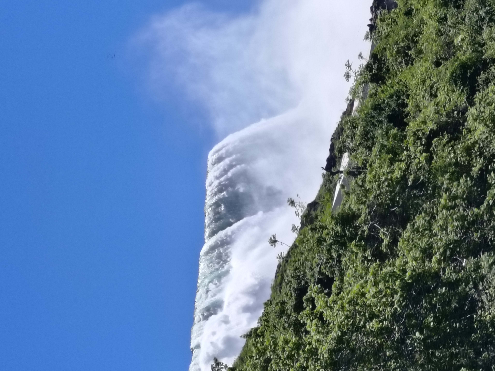
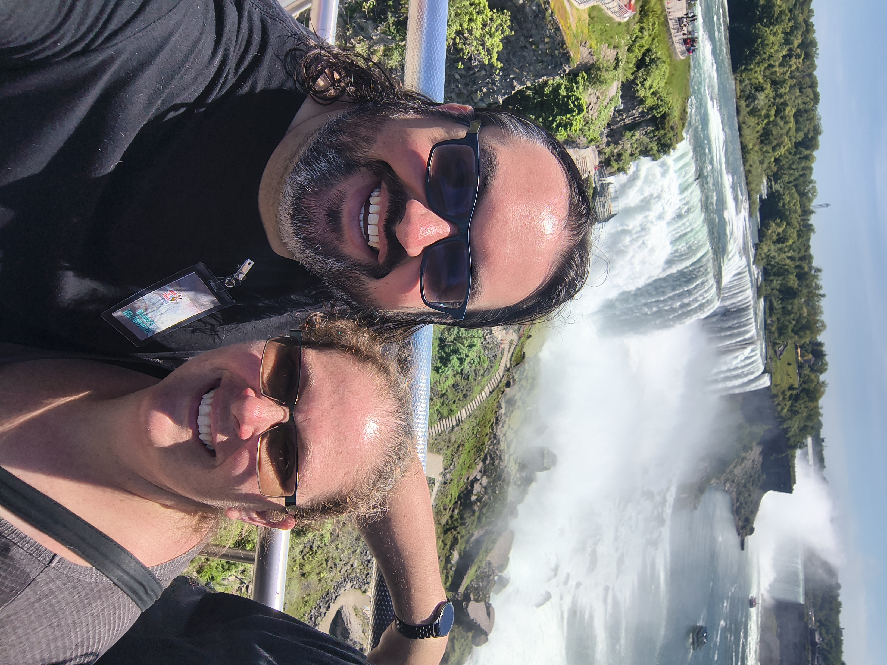
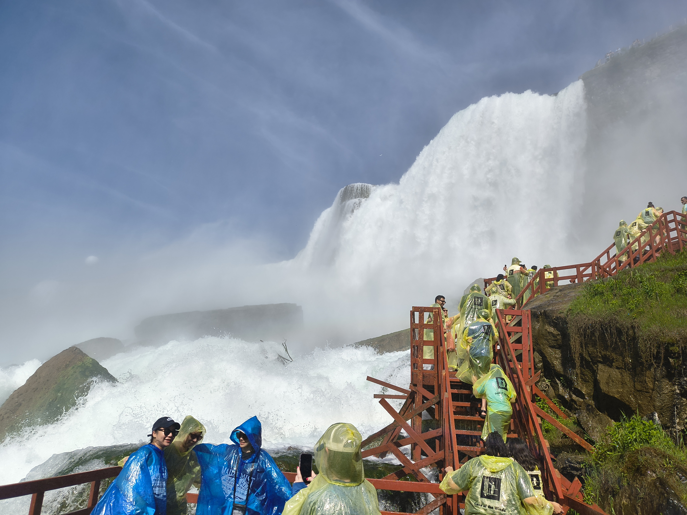

Today is the last day of my vacation. I started this site and the blog while on vacation... Maybe I don't do them right. I gather that you are supposed to just relax and enjoy your time off during vacations. It's a good thing I find making this blog and the site as a fun worth while adventure!
My vacation started with my son's graduation. He completed his highschool education on Friday June 5th 2026. It was a long a road and frankly it was one I wasn't sure that he would be able to complete. We had some struggles, particularly early on in his education, but with a lot of great help and intervention from the school he was able to make it! In fact he finished his education by going to the local community college the past 3 years. So not only did he get his highschool diploma, he completed a technical training in Auto Collision Repair.
At the end of the course he had to take a certification test called the Nocti. He passed the certification test with an advanced placement. I'm not sure that it matters to employers, but I'm proud. That shows that while he was doing it, I think initially to avoid going to the normal highschool, he was paying attention and building skill. Tomorrow starts his first day in that field with a local collision repair shop
Our actual vacation followed his graduation party and we went to Buffalo New York and visited the Niagra Falls. We stayed in Buffalo each night, because we wanted to stay at a hotel called "The Richardson Hotel". What drew my attention to it is that we share a namesake, but then I found out it was a converted insane asylum from the turn of the century. My wife and I both really enjoy creepy and potentially haunted things so we thought we would give the hotel a try as well.
We didn't encounter any ghosts in the hotel. We did however, book a haunted tour of the city of Buffalo. We met a tour guide downtown and proceeded to walk around and see a few buildings and learn about their "haunted" history. I think my favorite story was about the Prudential building. The story told to us was that it was run by mobsters during the 1920's, which led to multiple murders and events happening at the building. There is also a lady in white, which is rumored to have been a mistress in her flapper outfit at the site.
Monday we spent time at the falls. Once again we booked a tour guide who went over the history of the falls. We also rode the maiden of the mist and went into something called "The Cave of the Winds" which as far as I can tell was just a platform at the base of the US side of the falls. While it was very cool, I don't see how it is a cave.
All in all it was a very good and fun trip!






